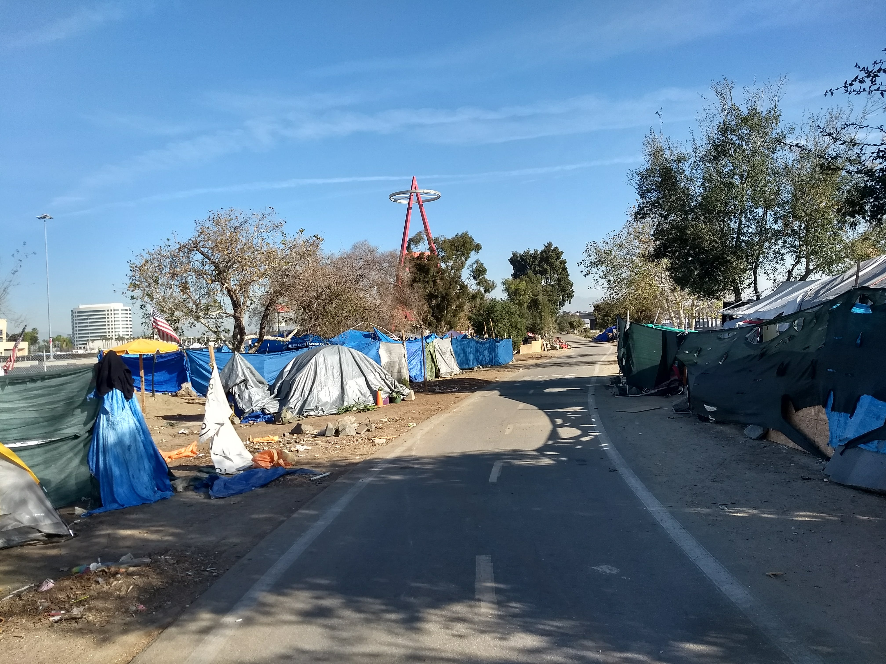

Not Abandoned is a program of practice-based research into best practices for activist photogrammetry for virtual reality. I am the principal researcher and creative director of the project.
The first research phase began in November 2017, as I partnered with ACLU SoCal and recruited a team of Occidental College students to study the Santa Ana River encampment in Orange County, CA. The project scope initially included a period of research and community engagement in advance of on-site work. Unfortunately, this became impossible two months later, when the Orange County Sheriff's Department began forcibly de-encamping the community in January 2018. At this point, we immediately shifted into documenting and scanning the encampment, as we attempted to capture the space before it was erased.
This banner was made by a resident of the encampment, in an effort to prevent authorities from removing their home and belongings while they were not present. The message became the inspiration and driving force behind our research.
Dogs were common in the encampment. This one rests beside 'Camp Hope', a community-run space where residents would work together to slow the de-encampment process.
Memorials were also common at the encampment. This memorial was perhaps the largest, and most centrally located.
Several members of the student research team enter the encampment, with photogrammetry equipment in tow.
Here we see a student capturing the de-encampment in progress.
One of the cleanup crews that worked alongside police to remove residents' homes and belongings. Most of these materials were stuffed into two large shipping containers at one end of the camp.

The encampment was over a mile long, and once housed upward of eight hundred residents along a bike and walking path. This stretch had already been partially de-encamped, and still many residents remained.
Behind these dwellings, we can see Angels Stadium in the background. Note that the Anaheim Ducks' arena sits on the opposite side of the river, behind the person taking this photograph.
Some residents erected barriers and signs, in an effort to resist de-encampment. Again, we see Angels Stadium in the background.
Many residents had lived in the encampment for several years, and some of these people served important roles in the community. For example, this person repaired residents' bicycles -- a critically important service, as many residents had jobs and needed their bikes for transportation.
Drones are important (if not essential) to outdoor photogrammetry, in part because of the GPS-encoded image data they collect while photographing an area.
We were unable to fly a drone over the encampment because it sat beneath a no-fly zone. We were relieved when we discovered this, because by then the team was seriously concerned about the ethics of flying a drone overhead in this manner.
Over the course of several weeks in January and February 2018, we captured photogrammetric data through a significant number of images, using a variety of capture techniques. These included both comprehensive DSLR photography and 360 degree video captures. We also encountered two serious problems: (1) ethical concerns around using photogrammetry in a crisis moment, without sufficient time to build relationships with community members, and (2) technical limitations due to the camp's location in a no-fly zone, which prevented us from using a drone to capture essential images from above the camp. For these reasons, our initial work was limited to documentation, technical research, and the creation of a proof of concept prototype.
This video describes and documents phase one of Not Abandoned, a photogrammetric capture of the Santa Ana River encampment in Jan. and Feb. 2018.
As we move into the second phase of research, the focus of Not Abandoned has shifted to the creation and dissemination of a set of best practices for activist photogrammetry, and the design of a second social justice VR project. I was recently invited to participate in an idea hackathon, "Looking at Economic Mobility Narratives", organized by the Bill and Melinda Gates Foundation; it was designed to help attendees prepare a grant proposal for the Gates Foundation's "Voices For Economic Opportunity" Grand Challenge. I plan to submit this proposal in November 2019, and begin research and production on the second project phase in early 2020.